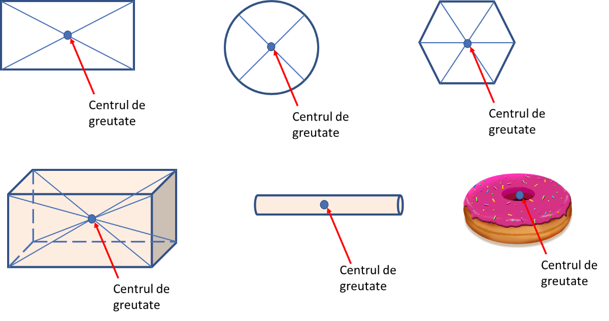

Lecția 5 – Centrul de greutate
„Fizica nu este o materie dominată de formule, ci de logică.”
În această lecție afli ce este centrul de greutate, de ce influențează echilibrul unui corp și cum depind stabilitatea și răsturnarea de poziția lui față de baza de sprijin.
1. Ce este centrul de greutate?
Centrul de greutate este punctul în care putem considera aplicată rezultanta forțelor de greutate ale tuturor părților unui corp.
Interpretare simplă
Este punctul în care „acționează” greutatea totală a corpului.
De ce este important?
Poziția centrului de greutate influențează foarte mult echilibrul unui corp. Dacă susținem un corp exact în centrul său de greutate, corpul poate rămâne în echilibru.
2. Poziția centrului de greutate
Poziția centrului de greutate depinde de forma corpului și de distribuția masei în interiorul său.

| Tip de corp | Poziția centrului de greutate |
|---|---|
| corp omogen și simetric | în centrul geometric al corpului |
| corp neomogen sau neregulat | poate fi deplasat față de centrul geometric |
| corp concav | poate fi situat chiar în afara materialului corpului |
3. Cum poate fi determinat?
Pentru un corp subțire, de formă neregulată, centrul de greutate poate fi determinat experimental prin suspendare.
Pasul 1
Corpul se suspendă de un punct și se trasează verticala firului cu plumb.
Pasul 2
Corpul se suspendă din alt punct și se trasează o nouă verticală.
Concluzie
Punctul de intersecție al verticalelor este centrul de greutate.
4. Centrul de greutate și echilibrul
Poziția centrului de greutate față de baza de sprijin determină dacă un corp rămâne sau nu în echilibru.
Un corp rămâne în echilibru cât timp verticala dusă prin centrul de greutate cade în interiorul bazei de sprijin.
5. Tipuri de echilibru
| Tip de echilibru | Caracteristică |
|---|---|
| Echilibru stabil | după o mică deplasare, corpul revine la poziția inițială |
| Echilibru instabil | după o mică deplasare, corpul se îndepărtează de poziția inițială |
| Echilibru indiferent | după o mică deplasare, corpul rămâne în noua poziție |
6. Cum obținem stabilitate mai mare?
Stabilitatea unui corp crește dacă:
- centrul de greutate este mai jos;
- baza de sprijin este mai mare.
Centru de greutate jos
Un corp cu centrul de greutate coborât se răstoarnă mai greu.
Bază de sprijin mare
Un corp cu bază de sprijin mai mare este mai stabil.
Dacă baza de sprijin crește și centrul de greutate coboară, stabilitatea se mărește.
7. Exemple din viața reală
Omul
Când o persoană își depărtează picioarele, baza de sprijin crește și stabilitatea devine mai mare.
Sport
Gimnaștii și luptătorii coboară centrul de greutate pentru a fi mai stabili.
Construcții
Clădirile trebuie proiectate astfel încât să aibă stabilitate bună.
Vehicule
Un autobuz cu centrul de greutate mai sus se poate răsturna mai ușor decât un autoturism jos.
8. Reținem
- centrul de greutate este punctul de aplicație al greutății totale a corpului;
- poziția lui depinde de forma corpului și de distribuția masei;
- un corp rămâne în echilibru dacă verticala centrului de greutate cade în baza de sprijin;
- stabilitatea crește când centrul de greutate este mai jos și baza de sprijin este mai mare;
- există echilibru stabil, instabil și indiferent.
Verificare rapidă
Bifează enunțul corect.
Navigare
Butonul „Mergi mai departe” rămâne vizibil pe fiecare pagină a lecției.